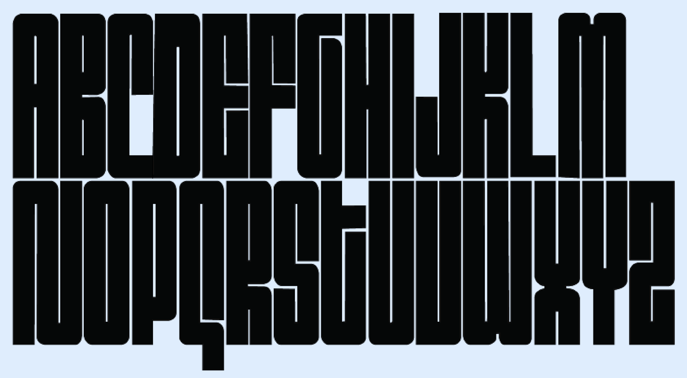

A whole identity grown from a single letterform - giving a music subculture a face to match its sound.
Brand identityUI/UX · art directionIn collaboration with Koto
01 - The problem
A scene with a sound, but no visual language.
Brief: build a social brand that connects music lovers with their people - uniting the music of Spotify, the tickets of Dice and the connection of social platforms, across both digital and physical spaces. Developed in collaboration with Koto. Spotify had solved access, not belonging: subcultures were fading into obscurity, held together only by gigs, merch and physical formats.
02 - My role
Identity, from the letterform up.
Working alongside the team at Koto, my role covered UI/UX design, presenting and art direction. I developed the mark through sketching, iteration and type experiments, then built the identity across print, motion, apparel and the app.
03 - The outcome
A working app, not just a brand world.
The identity's proof point is the Trax app itself - a live product connecting party-goers, DJs and events, with the same mark and system carried through onto a poster, a tote and a wall without losing its edge.
One mark. A full visual world. Identity, worn.
01 / logogif1Animated identity opener
Direction / from mark to movement
The identity starts with a compressed, energetic wordmark. Every later decision - palette, emblem, type, motion and application - carries that same pressure through a different surface.
Inspiration
The visual territory drew on retro VHS-tape texture, Y2K graphics and a distinctly Gen Z sensibility - nostalgic but current, low-fi but confident.
02 / sketches1Logo iteration03 / doodles1Early mark studies04 / logo1Logo applied to a landing page mockup05 / logo2Final wordmark06 / logocolours1Colour application07 / emblem1Secondary mark
Utilising nostalgic 3D lettering and high-shine metallic finishes against a dark background to establish a bold, youth-oriented visual identity.
08 / palette1Colour system
The app / connecting the scene
Trax connects party-goers with other party-goers, building a community around the music they like and the events they go to. It also lets DJs and musicians promote themselves to tailored, relevant audiences. A world where new creatives have the ability to be seen and break out - we help creatives who want to be discovered by giving them a platform to gain exposure and share their events and music.
09 / appvideo1Connecting party-goers, DJs and events
Craft / type made in-house
The typeface was created and drawn by me specifically for Trax. It gives the identity a voice that belongs to the project rather than borrowing one from a library.

10 / 12Custom typeface, app screen and detail study - the same identity, made by me, applied across every surface.